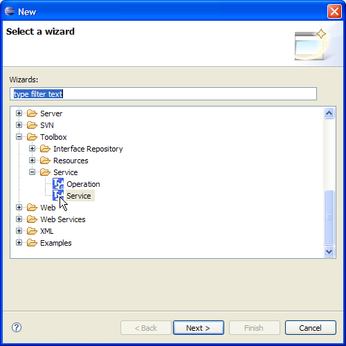
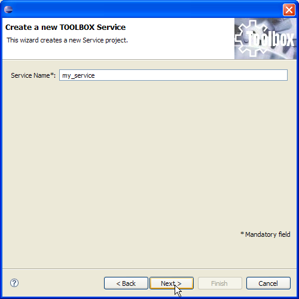
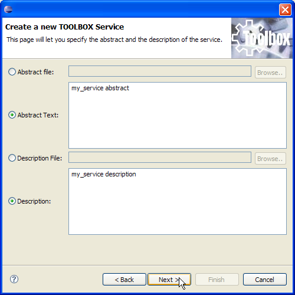
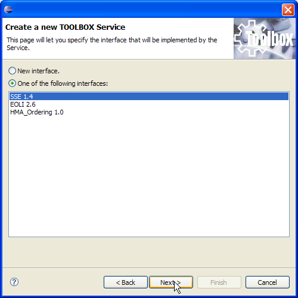
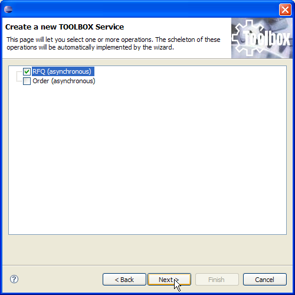
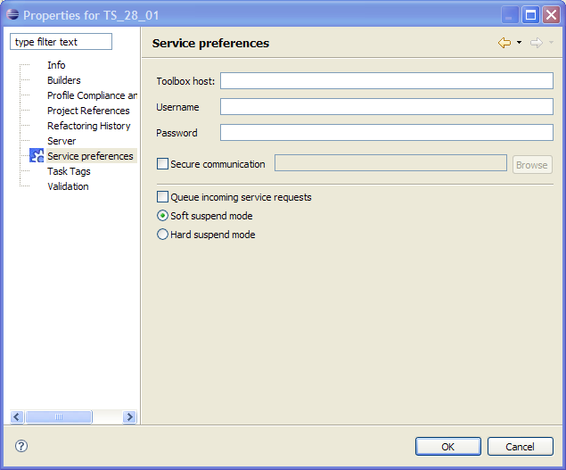
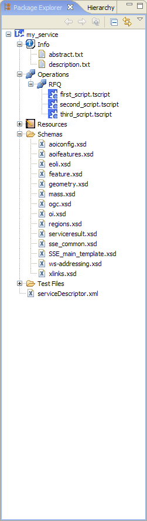

A new service project will let you build a new TOOLBOX service. To create a new project, click on the File menu and select "New/Project".
A dialog showing all project types is shown to the user. Select the "TOOLBOX/Service/Service" item in the category tree. Now, click "Next".

The project wizard is shown to the user. Through several pages, the wizard will let you specify all informations needed to build the service.
The first wizard page will ask you to provide a name for your service. Put it on the "Service Name" field and click on "Next".

The second page will ask you to provide an abstract and a description for the service. You can provide it as free text or you can select an external file to import. NOTE: currently only free text will be visible from the TOOLBOX RE pages. In any case, provided information will be stored into the service project.

The third page will let you specify the interface to associate and implement on your service. The figure below shows that it is possible to select one of those available on the list on the bottom or it is possible to specify a new interface. The latter choice will let you create the interface from scratch, adding schema sets, providing all information when needed. Selecting the interface from the list, all these steps are performed automatically since all these information are stored into the Interface Repository. For more informations about the Interface Repository go here.

If you choose to implement an interface available into the Interface Repository, you have to select the "One of the following interfaces" radio button, select one of the interfaces and then click on "Next". A new wizard page (see below) is shown, allowing you to choose which operations to implement. In order to complete the task of creating a new service at least one operation must be created. The flow describe by the figures show you how to create an SSE service that implements an asynchronous RFQ operation. Always keep in mind that operations can be created and deleted at any time through the IDE GUI while it is not possible to modify the interface associated to the service (you have to recreate it).

Clicking on "Next" or selecting the "New interface" radio button on the previous step, the below wizard page is shown. Here some service specific information can be set.
The "Toolbox host" field can be filled with the URL of the TOOLBOX RE (version 7.0 or above) where the service shall be deployed and tested. The URL shall be provided in the form: http://<address>:<port>/TOOLBOX
The "username" and "password" fields can be filled with login infos. The user to be specify shall be the same used to login into the Toolbox Runtime Environment Administration Web Pages
The "Secure communication" field can be set to specify a cretifcate to be used in case of secure communication. The file path can be provided both typing it on the text field or selecting through a file dialog (shown clicking on the "Browse" button).
The "Queue incoming service requests" checkbox will let you activate the queuing functionality for incoming messages. This functionality has a service scope.
The "suspend mode" radio button lets you specify the suspend mode for the service. Below information about suspend modes:

Clicking on "Finish" the service is created into the workspace as shown below.
